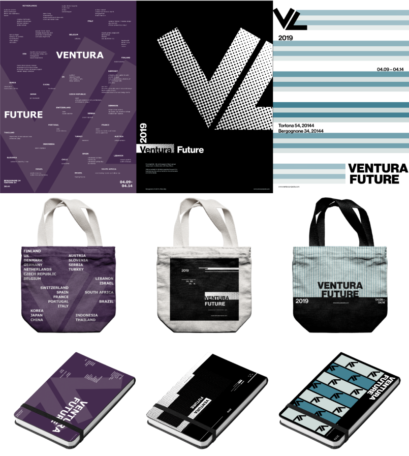
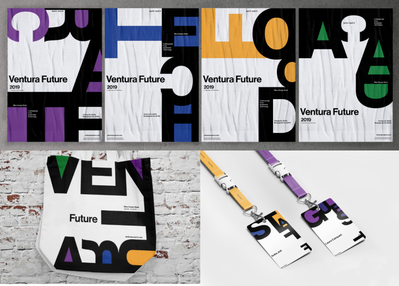

This is a project created by 4 designers for an Information Design (IAT 235) course. The project revolves around working with a client to design visual representations of information. Throughout the project, I am in charge of design research, graphic design and UX/UI design.
Ventura Future is a cultural organization based in Milan whose focus is to highlight and promote contemporary design and new designers. Designers are urged to apply to be part of the design exhibitions that are curated by the organization and the exhibitions are held during the annual Milan Design Week.
Taking inspiration and learning from the radical modernist, Dan Friedman, we have created design principles that we applied in our design: Use of Combination Grids, Energy created through Scale and Orientation, Reversible Figure Ground Motifs, and Varying use of Typographic Alignment. Each member brainstormed ideas for our initial design of visual assets. Initially, it took me a long time to create the designs as I struggled using all of Friedman’s principles in one design. Though, learning about Friedman and how his students applied his learning onto their works from their perspective, I was able to adapt to his principles and create the black and white design.
After several iteration, the team decided to further explore the black & white design I have created as Friedman’s design principles were used. Through experimentation, we created visual assets such as posters, lanyards, and sketchbooks for Ventura Future’s upcoming exhibition.
We chose to intervene at the pre-purchase point and encourage applications from designers for Ventura Future 2020 exhibition. We created a microsite that proposes to promote the Ventura Future 2020 exhibition and to increase application and engagement for the prospective designers by highlighting the benefits prospective exhibitors may receive using past statistics from the 2019 exhibition. My role in creating the microsite was to do UX/UI and interaction design as well as copywriting. I laid out the design of the microsite in Figma and suggested any animation and interaction design for the microsite.
Overall, I feel proud of the outcome of this project as I was able to see design from a different perspective and it shaped the way I do design. This project also strengthened my communication and critical thinking skills which I can use during collaboration work in the future.